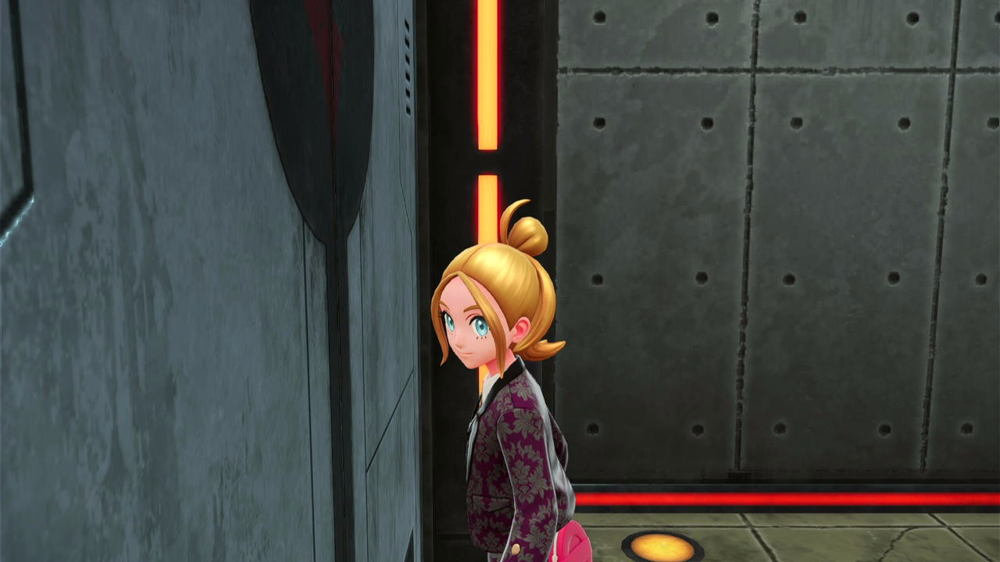
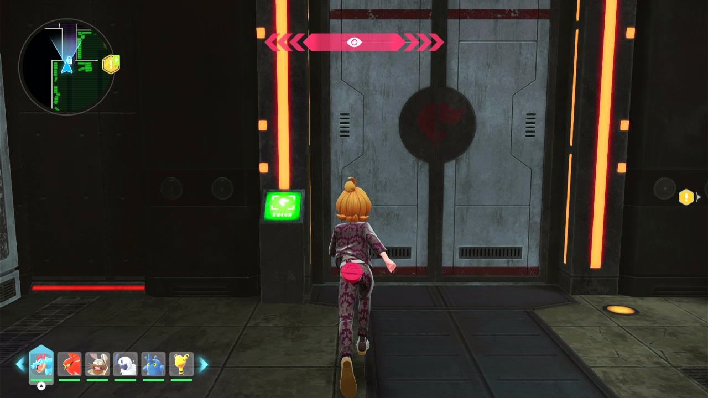
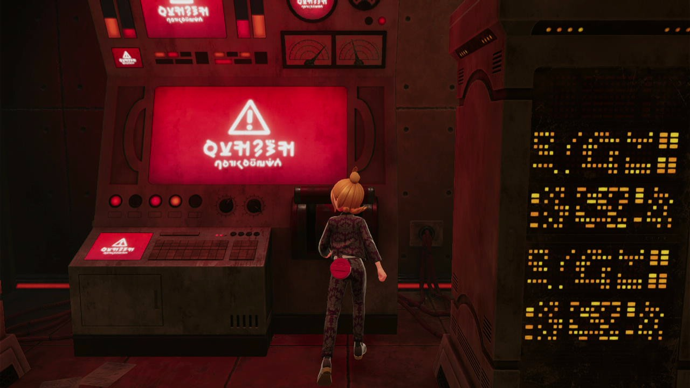
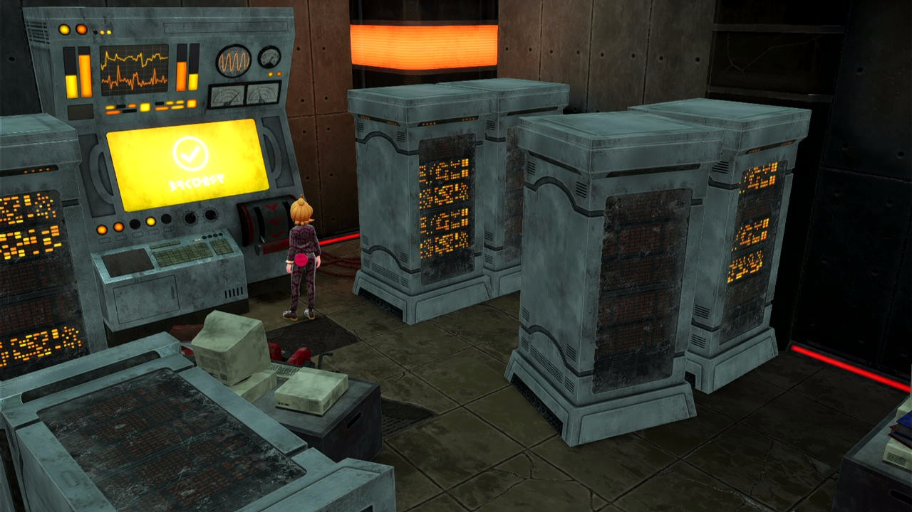
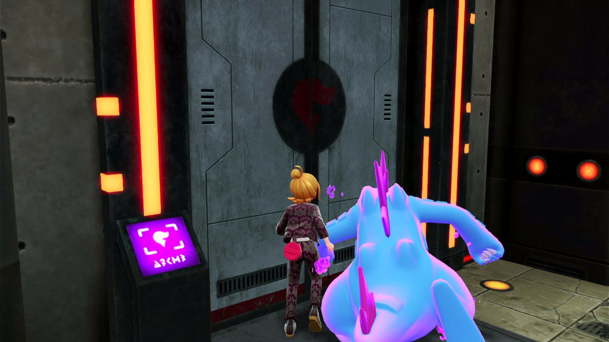
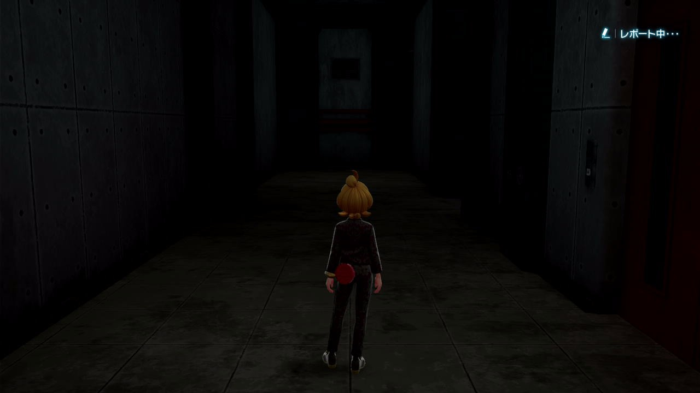

2026-10-26・ZA Story
フラダリラボの再試行を妨げるA確認を無効化
白コメントが出なくても進む既存処理は残っていました。その手前に追加したA確認が、取得・操作・解錠済みの場所を再び通る経路で待機するため、該当5箇所をコメントアウトしました。
ZIP内の当時のソースと保存画像を照合。変更前はAも白コメントもない状態で対象5箇所が同じStepに留まることをテストで再現し、変更後は次の処理へ進むことを確認しました。実機での再通過は未確認です。
戻した箇所
| Step | 場所 | 変更 | 動作 |
|---|---|---|---|
| GURI_92 | 電源装置 | A確認をコメントアウト、追加Lもコメントアウト | 93へ。移動・A入力値を維持 |
| GURI_95 | カードキーB | A確認をコメントアウト、追加Lもコメントアウト | 96へ。移動・A入力値を維持 |
| GURI_102 | カードキーBの解錠 | A確認をコメントアウト、追加Lもコメントアウト | 103へ。移動・A入力値を維持 |
| GURI_106 | カードキーC | A確認をコメントアウト | 107へ。移動・A入力値を維持 |
| GURI_111 | カードキーCの解錠 | A確認をコメントアウト | 112へ。移動・A入力値を維持 |
追加前の移動方向・時間、A入力値、途中の「調べる」検知による86／103への戻り先は保持。コールバックを展開し、停止確認の差だけを除くと、対象5関数の実行内容はZIP内の当時のソースとASTで一致します。
ラボへの再入場、119のエレベーター、125／126の退出・入場、127のラボ外の会話入口は既存のA確認を維持。暗転・黒コメント・敗戦復帰とTOWER_78→69の修正も保持しています。
白コメントがない場合の現状
GURI_88／96／103／107／112／120は、コメント未確認のまま現在の共通待機時間120秒を超えると次へ進みます。一度タイムアウトで通過したStepは通常の再訪時に即時通過し、明示的な区間復旧で前へ戻った場合だけ再確認を許可する従来処理です。GURI_93は黒コメントがなくFIELDが連続10回成立すれば94へ進みます。
終盤のGURI_122は例外です。白／緑コメントの確認が必要で、未確認時の有効な復帰先はoverride設定の118です（旧表の108をoverrideが上書き）。ここは今回変更していません。128の未確認時→129も維持しています。
ほかの類似経路
| 対象 | 確認・扱い |
|---|---|
| TOWER_67を再訪していた78の復帰 | 前回修正の78→69を保持。事前会話67を通らず、ホルビーへ再接近。 |
| YUKARI_64／68／72／76／80／84／88／92 | 連戦のA確認は既に無効。追加変更なし。 |
| HOTEL_Z_81→79、TOWER_54→52、CANARI_14→6 | 会話を始め直す既存経路として確認。完了済み装置を通り直す根拠は今回確認できておらず、A確認は維持。 |
| SHIRO_23、YUKARI_19／44／50 | 入口や昇降装置を再度使う経路として維持。 |
関数内の後戻りと主要復帰表を起点に点検しています。全ストーリーの実機通過・全動画全フレームの監査を完了した意味ではありません。
ZIPの保存画像と当時の処理
Switch_No3.zip内のl_MzEJK1KeM対応記録。画像は原ファイルのままコピーしSHAを保持。動画ファイル本体はZIPに含まれておらず、今回は保存画像・Step時刻・ソーススナップショットを確認しています。画像は主にStep開始／演出中で、A入力直前の判定精度を示すものではありません。

元動画の参照位置 39:21（保存時刻 2361.542秒）

元動画の参照位置 41:17（保存時刻 2477.750秒）

元動画の参照位置 43:33（保存時刻 2613.088秒）

元動画の参照位置 43:42（保存時刻 2622.100秒）

元動画の参照位置 45:16（保存時刻 2716.531秒）

元動画の参照位置 50:43（保存時刻 3043.883秒）
検証と反映
関連テスト: Ran 39 tests in 50.694s / OK。新規8テストは変更前9失敗（subtest含む）を再現し、修正後に成功。
必須全体: Ran 878 tests in 1013.129s / FAILED (failures=19, errors=8, skipped=1)。前回の既知27診断と比較して追加0件、解消0件。全体成功ではありません。
Origin・stock・配布ZIP・clean DevStudio文書に5関数だけを同期。その他のソース、復帰設定、ZIPの他437ファイル、他文書を保持。Python 3.7構文を確認。
反映はCommands停止後のF5 Reload。稼働中のCommands・カメラ・ゲーム入力は操作していません。
Source SHA256: 5131dce3d8f7f5c7a9abc01b81df5f1c79af6798833894ee80831d1fcc448076
検証記録 · 今回の差分 · 前回の会話後カメラ確認